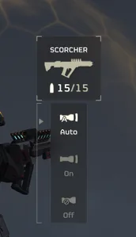
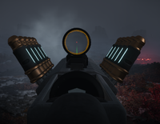
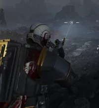

PLAS-1 灼烧者
“等离子步枪，可发射一束过热气体，触及着弹点后引爆。请勿站在爆炸点附近。
— 军械库描述
PLAS-1 Scorcher 是一个 主武器·能量系 发射爆炸性能量投射物的武器。
采购
焦土在……的第10页解锁 绝地潜兵 Mobilize 战争债券 用于  75 奖章.
75 奖章.
配件
Any math should be done on values listed in the 详细武器数据 章节.
| Weapon | 类别 | 配件名称 | 解锁等级 | 解锁费用 | 效果 |
|---|---|---|---|---|---|
| Scorcher | 瞄准镜 | 1.5x Tube Red Dot | 武器等级 1 |  0 0
|
变焦 37.5m |
| 反射式瞄准镜 | 武器等级 4 | 5,000
|
变焦 25m | ||
| 全息瞄准镜 | 武器等级 7 | 7,000
|
变焦 25m | ||
| 反射式瞄准镜 Mk2 | 武器等级 14 | 7,000
|
变焦 25m | ||
| 机械瞄具 | 武器等级 24 | 13,000
|
人体工学 +5, 变焦 25m | ||
 下挂 |
激光瞄准器 W/ Flashlight | 武器等级 1 | 0
|
人体工学 -5 | |
| 无下挂 | 武器等级 1 | 0
|
|||
| 垂直前握把 | 武器等级 2 | 5,000
|
人体工学 -5, 垂直后坐力 -20% | ||
| 直角前握把 | 武器等级 9 | 7,000
|
人体工学 +5, 晃动 -25%, 垂直后坐力 +20% | ||
| 手电筒垂直前握把 | 武器等级 18 | 7,000
|
人体工学 -7, 垂直后坐力 -20% | ||
| 激光瞄准器 直角前握把 | 武器等级 22 | 7,000
|
人体工学 +3, 晃动 -15%, 垂直后坐力 +20% |
战术信息
- 爆炸弹可以伤害密集聚集的敌群，以及任何离爆炸太近的绝地潜兵。
- 没有 绝地喷射舱 Space 优化 增益，它只配备5个可用弹匣中的3个。 蓄势出击 盔甲被动加成 通过+1弹匣略微缓解焦土的弹药经济性问题。
- 焦土的特性使其几乎可以对付游戏中的每一个敌人。爆炸等离子可以绕过诸如……敌人身上的中甲 虫窝护卫, 侦察纵步者，以及 蹂躏者。爆炸对……耐久的臀部也非常有效 强袭虫, 穿刺虫 面部，……上的通风口 机器人 巨型者，以及 坦克.
- 焦土能够消灭 炮舰 通过射击推进器，因为爆炸
 中型 护甲穿透。
中型 护甲穿透。 - 追猎虫 和 猛扑虫 可能经常使这把武器难以使用，因为它们能迅速进入射手的近战范围，使焦土无法安全开火。不过，近战攻击后迅速后退射击是避免自伤的好战术。
- 它拥有所有爆炸武器中最低的硬直量；所有脆弱到能被爆炸内半径有意义地硬直的敌人，无论如何都会被直接杀死。
媒体

武器轮盘 for the PLAS-1 Scorcher
First-Person. It is the only available option
Third-Person on the PLAS-1 Scorcher
变更历史
补丁
描述
1.004.100
2025-10-23
Change
- 等离子弹现在可以穿过植被而不损失速率
1.003.000
2025-05-13
未记录的改动
- 调整了装填动画、音效和HUD元素，使其与装填时机正确匹配。弹药电池不再会在锁定机构明显咔嗒一声扣合后被神秘地从弹膛中移除。
1.001.104
2024-10-15
变更
- 新增武器功能：自动射击模式。
- 射速从250提升至350.
- 弹匣容量从15提升至20.
- 备用弹匣从6减少至5.
未记录变更
- 质量从100克减少至25克
- 阻力从100%提升至150%。